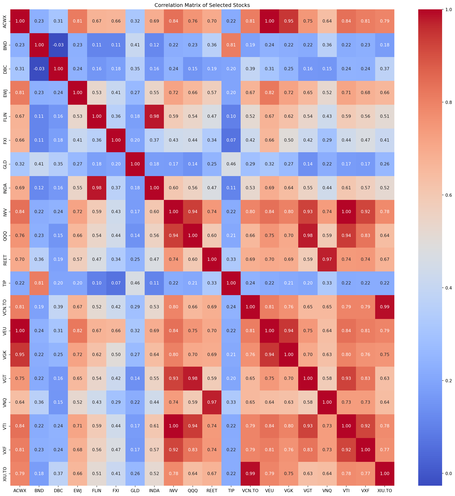

import pandas as pd
import yfinance as yf
import seaborn as sns
import matplotlib.pyplot as pltCalculating Stock Correlations
A toy project that explores visualising stock return correlations
Downloading Stock Data from yfinance
universe = pd.read_csv("../data/universe.csv")
# Date range
start = '2021-01-01'
end = '2024-09-22'
# Tickers of assets
assets = universe['Ticker'].to_list()
assets.sort()
# Downloading data
data = yf.download(assets, start = start, end = end)
data = data.loc[:, ('Close')]
data.columns = assets
data[ 0% ][***** 10% ] 2 of 20 completed[******* 15% ] 3 of 20 completed[******* 15% ] 3 of 20 completed[******* 15% ] 3 of 20 completed[******* 15% ] 3 of 20 completed[***************** 35% ] 7 of 20 completed[******************* 40% ] 8 of 20 completed[**********************45% ] 9 of 20 completed[**********************50% ] 10 of 20 completed[**********************55%* ] 11 of 20 completed[**********************55%* ] 11 of 20 completed[**********************55%* ] 11 of 20 completed[**********************55%* ] 11 of 20 completed[**********************55%* ] 11 of 20 completed[**********************80%************* ] 16 of 20 completed[**********************85%**************** ] 17 of 20 completed[**********************90%****************** ] 18 of 20 completed[**********************95%********************* ] 19 of 20 completed[*********************100%***********************] 20 of 20 completed| ACWX | BND | DBC | EWJ | FLIN | FXI | GLD | INDA | IWV | QQQ | REET | TIP | VCN.TO | VEU | VGK | VGT | VNQ | VTI | VXF | XIU.TO | |
|---|---|---|---|---|---|---|---|---|---|---|---|---|---|---|---|---|---|---|---|---|
| Date | ||||||||||||||||||||
| 2021-01-04 | 47.711864 | 78.622475 | 13.149570 | 61.875252 | 25.043993 | 42.370186 | 182.330002 | 37.514973 | 209.478287 | 301.685455 | 20.478317 | 109.025627 | 31.250053 | 51.620842 | 53.464722 | 337.758545 | 70.930573 | 180.991135 | 154.595139 | 23.268789 |
| 2021-01-05 | 48.409817 | 78.488594 | 13.518332 | 62.449894 | 25.429300 | 43.523243 | 182.869995 | 38.194355 | 211.254074 | 304.172607 | 20.566355 | 108.991486 | 31.570013 | 52.412983 | 53.946613 | 340.535004 | 71.034142 | 182.453293 | 156.872391 | 23.490652 |
| 2021-01-06 | 48.615631 | 78.140404 | 13.536322 | 63.191357 | 25.371408 | 43.019924 | 179.899994 | 38.073364 | 212.877975 | 299.959045 | 20.733633 | 108.667313 | 31.845545 | 52.694630 | 54.586235 | 334.884796 | 71.155006 | 184.094620 | 160.254913 | 23.721386 |
| 2021-01-07 | 48.875118 | 77.979713 | 13.599280 | 63.061592 | 25.377102 | 43.321915 | 179.479996 | 37.896545 | 216.363113 | 307.215637 | 20.583960 | 108.599030 | 32.218830 | 52.879459 | 54.752712 | 344.418335 | 71.016876 | 187.047165 | 163.599319 | 24.005371 |
| 2021-01-08 | 49.537292 | 77.908287 | 13.707211 | 64.220139 | 25.889584 | 44.218735 | 173.339996 | 38.789974 | 217.512146 | 311.165863 | 20.724831 | 108.172470 | 32.227730 | 53.627583 | 55.006802 | 346.932678 | 71.707451 | 187.952728 | 163.856598 | 24.040869 |
| ... | ... | ... | ... | ... | ... | ... | ... | ... | ... | ... | ... | ... | ... | ... | ... | ... | ... | ... | ... | ... |
| 2024-09-16 | 54.599186 | 74.711639 | 20.714136 | 69.455086 | 41.408691 | 25.626524 | 238.660004 | 57.712471 | 318.677185 | 471.815094 | 26.472397 | 110.249237 | 47.879375 | 60.079185 | 69.305168 | 564.339111 | 97.203018 | 276.027191 | 177.350891 | 35.702126 |
| 2024-09-17 | 54.411861 | 74.612862 | 20.856533 | 68.637848 | 41.279507 | 25.951660 | 237.339996 | 57.543690 | 319.015076 | 472.064362 | 26.277533 | 110.209450 | 47.795540 | 59.844006 | 69.048706 | 564.049866 | 96.525330 | 276.305450 | 178.265686 | 35.612873 |
| 2024-09-18 | 54.273834 | 74.385681 | 20.723629 | 68.322769 | 41.021137 | 25.803871 | 235.509995 | 57.245846 | 318.041168 | 470.020538 | 26.199587 | 109.801559 | 47.657459 | 59.667614 | 68.881020 | 561.447083 | 96.407478 | 275.609863 | 178.325333 | 35.483948 |
| 2024-09-19 | 55.348469 | 74.385681 | 21.093864 | 70.134476 | 41.339130 | 26.730011 | 239.169998 | 57.692612 | 323.606384 | 481.904633 | 26.287275 | 110.129860 | 48.190060 | 60.814129 | 70.074570 | 578.051147 | 96.427124 | 280.280334 | 181.885086 | 35.890553 |
| 2024-09-20 | 54.944248 | 74.375809 | 21.093864 | 70.173851 | 41.985054 | 26.749716 | 242.210007 | 58.318089 | 322.741791 | 480.987396 | 26.141127 | 109.980637 | 48.197994 | 60.427479 | 69.027435 | 576.026733 | 96.044083 | 279.694061 | 180.681946 | 35.900475 |
954 rows × 20 columns
Calculating stock returns and correlation
#Calculating Returns
returns = data.pct_change().dropna()
correlation_matrix = returns.corr()
# Plot the heatmap
plt.figure(figsize=(20, 20))
sns.heatmap(correlation_matrix, annot=True, cmap='coolwarm', fmt=".2f")
plt.title('Correlation Matrix of Selected Stocks')
plt.show()/var/folders/49/wztx6mrd3qd9qcgjnk_y96040000gn/T/ipykernel_97275/4222160605.py:2: FutureWarning:
The default fill_method='pad' in DataFrame.pct_change is deprecated and will be removed in a future version. Either fill in any non-leading NA values prior to calling pct_change or specify 'fill_method=None' to not fill NA values.
